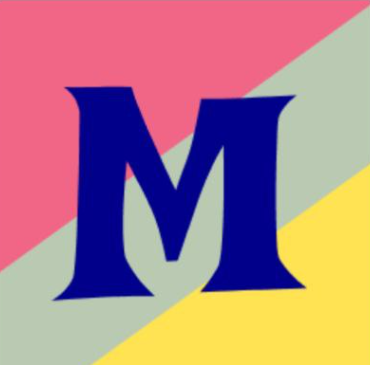
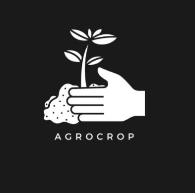

PatientCure
App Development / JetPack / Django
An A.I. powered app which analyses lab reports and provides a detailed analysis along with the HealthScore out of 100. It analyses all the reports scanned in past and generates a simple Body Vitals graph on that basis.

ShopSmart
Kotlin / JetPack / Design
ShopSmart is a shopping assistant app that lets you search for products, compare prices from various e-commerce platforms, and find the best deals in one place.

My Town Bus
React Native / Django
Bus Ticket Booking and Tracking App makes travel easier.

Cold Mailing Tool
Kotlin / AWS / Gunicorn
CMT is a powerful, user-friendly application designed to streamline your email management.

AgroCrop
E-commerce / Gemini
AgroCrop is an Android app designed to help farmers by recommending fertilizers, predicting the best crop for a given soil, and offering organic farming tips.